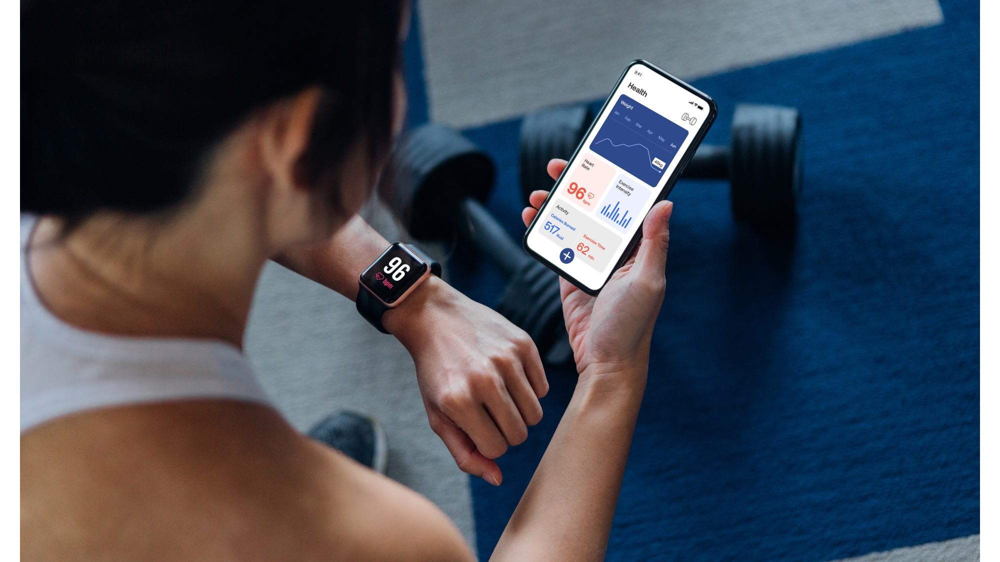

Plans too rigid
One missed workout becomes a broken week because the plan has no smaller gear.
Evidence-led personal training
Citadel Fitness helps you build your fortress: stronger habits, a stronger body, and a plan that still works when life gets busy. Built around bloodwork-informed onboarding, fitness testing, physio-led movement screening, personalised training, nutrition, and app-based accountability.
The real problem
Most people can start. The harder part is staying consistent when work gets heavy, sleep drops, family life takes over, an old injury flares up, or energy is lower than planned.
The cycle is familiar: you start strong, miss a few sessions, feel like the week is ruined, then wait for Monday to begin again. That is not a character flaw. It is a plan that only works when life is perfect.
One missed workout becomes a broken week because the plan has no smaller gear.
Without testing, tracking, and review, effort turns into guesswork.
Stress, travel, injuries, and low energy need contingencies, not guilt.
The operating principle
All-or-nothing fitness creates big swings: perfect weeks followed by total drop-off. All-or-something fitness protects your baseline. Even on difficult days, you still do something useful.
The method
Citadel Fitness starts with a clearer picture, then builds the plan around your body, your schedule, and the things that usually knock you off track.
Bloodwork panels, lifestyle review, fitness testing, and physiotherapy screening help establish a clearer starting point.
Personalised training, nutrition, and recovery targets built around your body, schedule, limitations, and goals.
Workouts delivered and logged through an app, with clear progression, habit targets, and accountability.
The plan adjusts when life gets messy, instead of falling apart completely.
Diagnostic onboarding
The first phase is calm, structured, and practical. It turns your current body, schedule, limitations, and goals into a coaching blueprint you can actually use.
Clarify goals, schedule, stress, sleep, training history, and the barriers that usually get in the way.
Use relevant markers to guide better lifestyle, training, and nutrition decisions.
Assess capacity, movement quality, restrictions, and injury considerations.
Build training, nutrition, recovery, and habit targets around your real constraints.
Track sessions, log progress, review adherence, and adjust the plan intelligently.
Less guessing at the start means smarter adjustments once training begins.
Who it is for
This is for people who want a more intelligent way back into training: supportive, evidence-led, and robust enough for imperfect weeks.
Not for you if
You are looking for a six-week punishment plan, a crash diet, or a generic copy-and-paste workout.
A stronger body. A clearer system. A standard you can return to.
What is included
Training, nutrition, testing, recovery, and accountability are brought together in one coaching process, so progress is easier to understand and easier to maintain.

Authority and outcomes
This section is ready for real testimonials, qualifications, partnerships, and progress data as they become available.
Placeholder - Client testimonial
Add a real client quote here once permission has been granted.
Placeholder - Trainer qualification
Add verified coaching certifications, specialisms, and experience.
Placeholder - Physio partnership
Add partnership details or referral information when confirmed.
Placeholder - Progress data
Add anonymised transformation, adherence, or performance data.
Start here
Start with a clear picture of where you are now, then build a realistic plan that can hold up in your actual life.